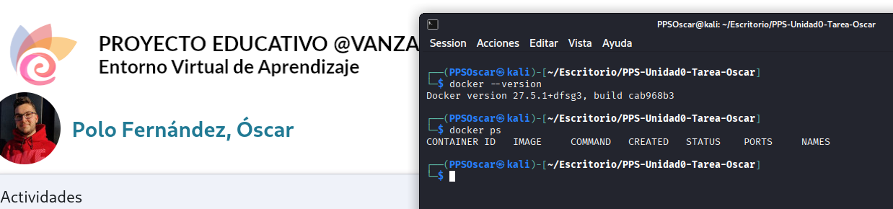
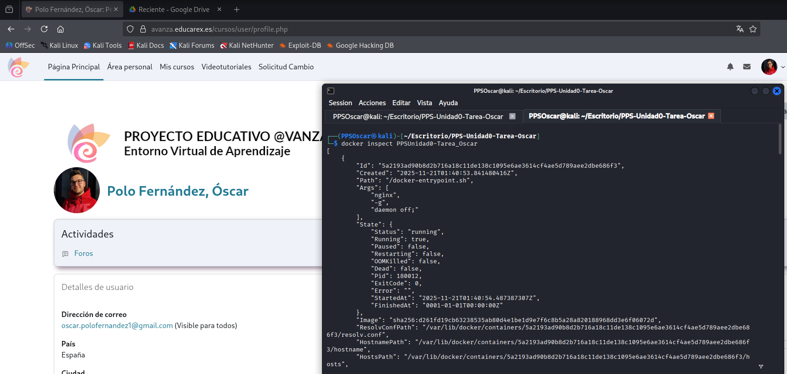

Desarrollo completo del apartado Docker
En este apartado documento y recopilo todo el proceso realizado en el apartado de Docker, incluyendo instalación, comandos utilizados y comprobaciones.
1. Preparación del entorno
En primer lugar, compruebo que Docker esté instalado:
docker --version
En caso de no estar instalado, podemos instalarlo con los siguientes comandos:
sudo apt update
sudo apt install -y docker.io
# instalamos también docker-cli
sudo apt install docker-cli
docker
# Nos debe de mostrar la versión de docker instalada
sudo usermod -aG docker PPSOscar
systemctl restart docker.socket
systemctl restart docker.service
Compruebo que el servicio está en funcionamiento:
docker ps

2. Obtención de los archivos HTML (rama gh-pages)
La documentación generada por MkDocs no se encuentra en la rama main, sino en la rama gh-pages, producida automáticamente por GitHub Actions.
Cambio a la rama gh-pages y listo su contenido:
git fetch
git checkout gh-pages
ls -la
Rercuerdo que el comando git fetch descarga del repositorio remoto la información nueva

3. Ejecuto del contenedor NGINX
Una vez situado en la rama gh-pages, levanto el contenedor NGINX utilizando bind mount. De esta forma, Docker monta una carpeta mi máquina local dentro del contenedor, en tiempo real.
Lo hago ejecutando estos comandos:
docker run -d \
--name PPSUnidad0-Tarea_Oscar
-p 8085:80 \
-v /home/PPOscar/Escritorio/PPS-Unidad0-Tarea-Oscar:/usr/share/nginx/html \
nginx
docker ps
A continuación, explico lo que realiza el comando, por partes:
- docker run -d --> Ejecuta el contenedor en segundo plano.
- --name --> Es el nombre del contenedor.
- -p 8085:80 --> El puerto 80 queda como el 8085 en mi máquina local.
- -v ruta:/usr/share/ngix/html --> Monta la carpeta actual en index.html
- -nginx --> Es la imagen del servidor NGINX.
- docker ps --> Muestro los contenedores en ejecución en mi máquina.

3.1 Inspecciono configuración del contenedor
Con el comando docker inspect obtengo toda la información del contenedor.
docker inspect PPSUnidad0-Tarea_Tu_nombre

Dentro de toda la información obtenida, he utilizado unos filtros para, con docker inspect mostrar únicamente información del volumen montado, la imagen utilizada, los puertos expuestos y el estado del contenedor:
docker inspect --format='Estado: {{.State.Status}}
Imagen: {{.Config.Image}}
Puertos: {{json .NetworkSettings.Ports}}
Volúmenes: {{json .Mounts}}' PPSUnidad0-Tarea_Oscar

3.1.1 Visualizar la documentación
Para comprobar que la documentación se muestra correctamente desde NGINX, accedo a mi localhost por el puerto 8085:
http://localhost:8085

4. Parar y eliminar el contenedor
Una vez finalizado el trabajo com el contenedor, procedo a detenerlo de forma controlada y a eliminarle.